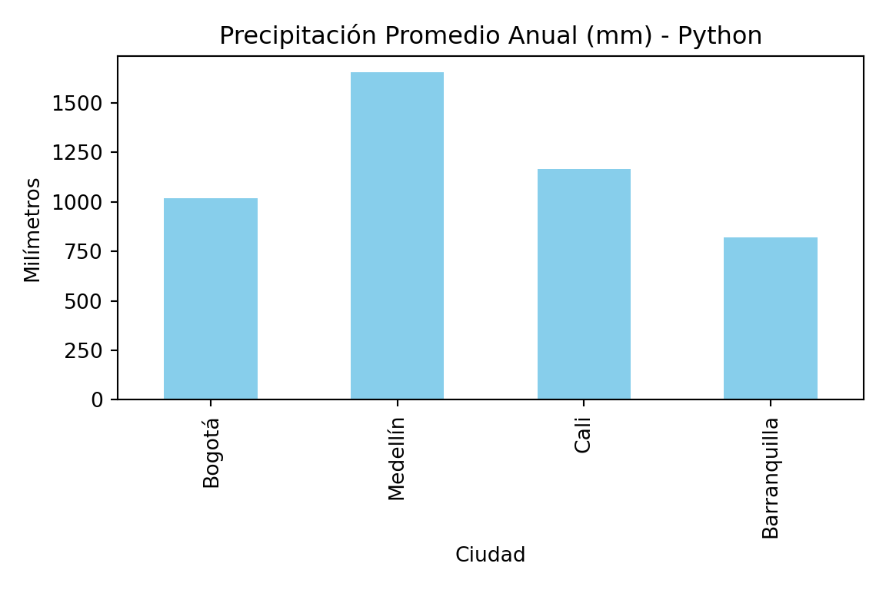
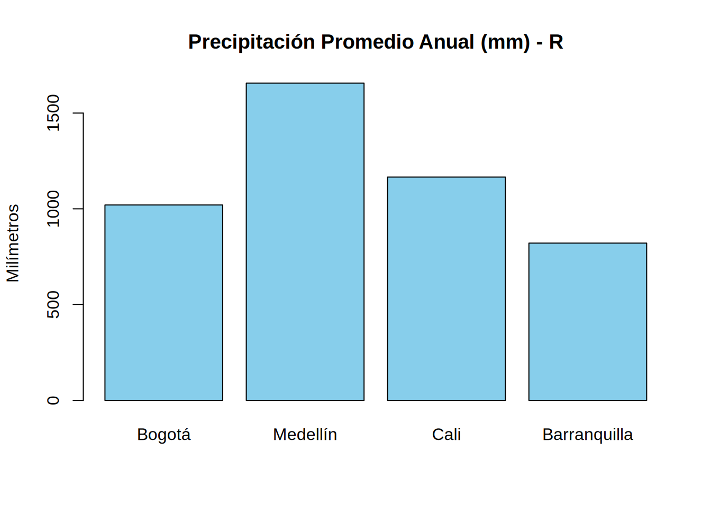
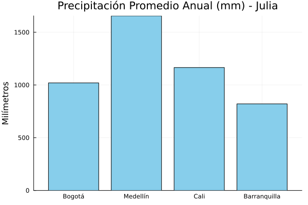
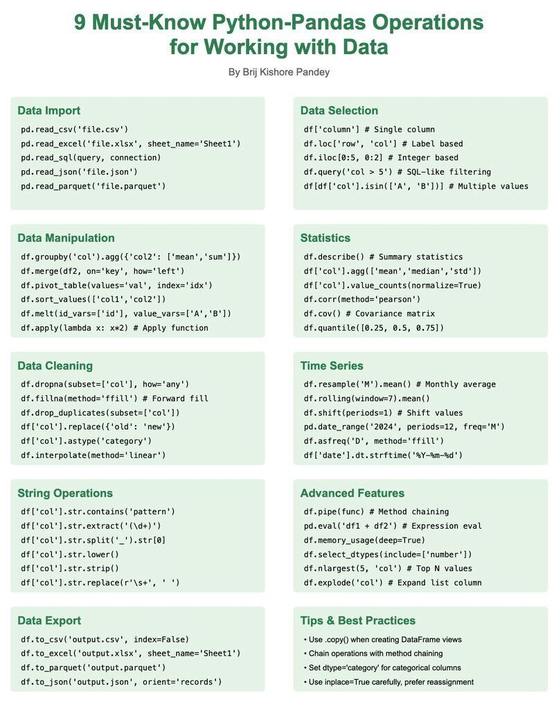
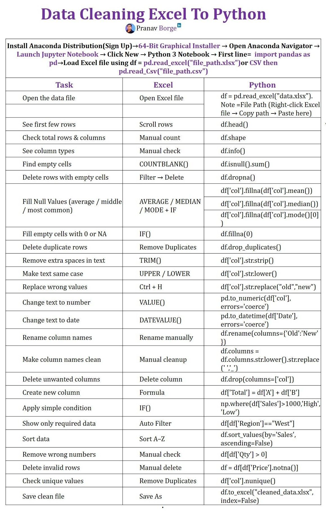
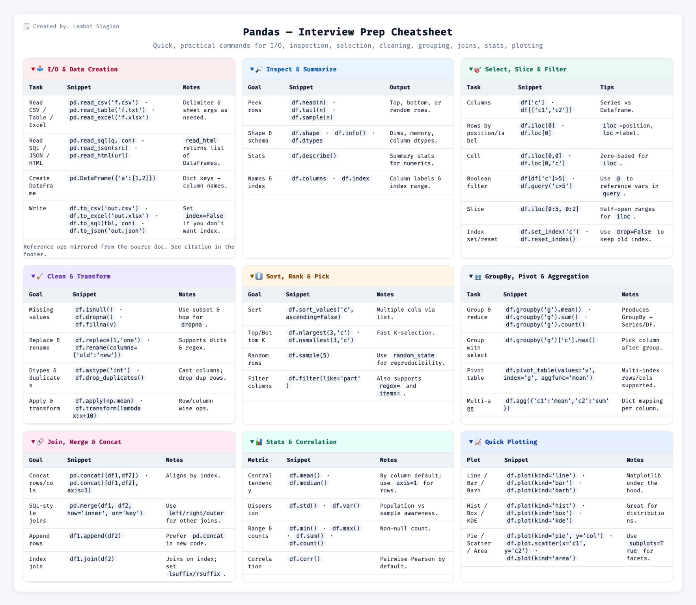

# 1. Importamos la librería estándar para cálculo numérico
import numpy as np
# 2. Arreglos 1D (Vectores): Elevaciones en metros
elevaciones = np.array([2640, 1495, 1018, 18, 959])
print(f"Elevaciones (1D): {elevaciones}")
print(f"Tipo de dato interno: {elevaciones.dtype}")
print(f"Forma (Shape): {elevaciones.shape}\n")
# 3. Arreglos 2D (Matrices): [Latitud, Longitud]
# Representan a: Bogotá, Medellín, Cali
coordenadas = np.array([
[4.7110, -74.0721],
[6.2442, -75.5812],
[3.4516, -76.5320]
])
print(f"Coordenadas (2D):\n{coordenadas}")
print(f"Forma de la matriz: {coordenadas.shape} (Filas, Columnas)")
# 4. Generadores automáticos (útiles para cuadrículas o rasters vacíos)
matriz_vacia = np.zeros((3, 3)) # Matriz 3x3 llena de ceros
print(f"Matriz 3x3 (2D):\n{matriz_vacia}")
rango_anios = np.arange(2015, 2021, 1) # Serie del 2015 al 2020
print(f"\nRango de años generado: {rango_anios}")11 Analítica Espacial: Arreglos y Tablas
11.1 Funciones j_eval y j_plot en R
11.2 Introducción
En el procesamiento de datos geográficos, rara vez trabajamos con una sola coordenada a la vez. Los Modelos Digitales de Elevación (DEM) son esencialmente inmensas matrices matemáticas bidimensionales, y las bases de datos censales del DANE son tablas con millones de filas.
Para manipular este volumen de información de forma eficiente, los lenguajes de programación utilizan estructuras de datos optimizadas escritas en lenguajes de bajo nivel (como C o Fortran). En Python, los pilares indiscutibles de la analítica son NumPy (para cálculos numéricos matriciales) y Pandas (para manipulación tabular).
En este capítulo aprenderemos a dominar estas estructuras, comparando la sintaxis de Python con las capacidades nativas y los paquetes equivalentes en R (vectores, matrices y DataFrames) y Julia (Arrays y DataFrames.jl).
11.3 Objetivos de aprendizaje
Al finalizar esta sección, el estudiante será capaz de:
- Manipular matrices numéricas: Crear, redimensionar y operar arreglos unidimensionales (1D) y bidimensionales (2D) simulando coordenadas y datos de elevación.
- Aplicar filtros matemáticos: Utilizar indexación booleana y slicing para aislar datos geográficos que cumplan condiciones específicas (ej. elevación > 2000 m).
- Estructurar datos tabulares: Construir y consultar DataFrames para organizar atributos de geometrías.
- Agrupar y unir bases de datos: Ejecutar cruces de información (merges) y resúmenes estadísticos (agrupaciones) simulando cruces de datos del DANE y el IDEAM.
11.4 Vectores y matrices (alternativas a NumPy)
Comenzaremos modelando listas de números puros. Supongamos que tomamos lecturas de elevación en cinco puntos de la Cordillera Central de Colombia y necesitamos almacenarlas en una estructura que nos permita realizar cálculos matemáticos rápidos.
# #| eval: false
# 1. Importamos la librería estándar para cálculo numérico
import numpy as np
# 2. Arreglos 1D (Vectores): Elevaciones en metros
elevaciones = np.array([2640, 1495, 1018, 18, 959])
print(f"Elevaciones (1D): {elevaciones}")Elevaciones (1D): [2640 1495 1018 18 959]print(f"Tipo de dato interno: {elevaciones.dtype}")Tipo de dato interno: int64print(f"Forma (Shape): {elevaciones.shape}\n")Forma (Shape): (5,)# 3. Arreglos 2D (Matrices): [Latitud, Longitud]
# Representan a: Bogotá, Medellín, Cali
coordenadas = np.array([
[4.7110, -74.0721],
[6.2442, -75.5812],
[3.4516, -76.5320]
])
print(f"Coordenadas (2D):\n{coordenadas}")Coordenadas (2D):
[[ 4.711 -74.0721]
[ 6.2442 -75.5812]
[ 3.4516 -76.532 ]]print(f"Forma de la matriz: {coordenadas.shape} (Filas, Columnas)")Forma de la matriz: (3, 2) (Filas, Columnas)# 4. Generadores automáticos (útiles para cuadrículas o rasters vacíos)
matriz_vacia = np.zeros((3, 3)) # Matriz 3x3 llena de ceros
print(f"Matriz 3x3 (2D):\n{matriz_vacia}")Matriz 3x3 (2D):
[[0. 0. 0.]
[0. 0. 0.]
[0. 0. 0.]]rango_anios = np.arange(2015, 2021, 1) # Serie del 2015 al 2020
print(f"\nRango de años generado: {rango_anios}")
Rango de años generado: [2015 2016 2017 2018 2019 2020]# #| eval: false
# 1. En R, no necesitamos importar librerías numéricas externas.
# 2. Arreglos 1D (Vectores): Usamos c() para combinar datos
elevaciones <- c(2640, 1495, 1018, 18, 959)
cat(sprintf("Elevaciones (1D): %s\n", paste(elevaciones, collapse=", ")))Elevaciones (1D): 2640, 1495, 1018, 18, 959cat(sprintf("Tipo de dato interno: %s\n", typeof(elevaciones)))Tipo de dato interno: doublecat(sprintf("Longitud (Length): %d\n\n", length(elevaciones)))Longitud (Length): 5# 3. Arreglos 2D (Matrices)
# Creamos un vector largo y lo doblamos en una matriz especificando columnas
datos_coord <- c(4.7110, -74.0721, 6.2442, -75.5812, 3.4516, -76.5320)
coordenadas <- matrix(datos_coord, ncol = 2, byrow = TRUE)
cat("Coordenadas (2D):\n")Coordenadas (2D):print(coordenadas) [,1] [,2]
[1,] 4.7110 -74.0721
[2,] 6.2442 -75.5812
[3,] 3.4516 -76.5320cat(sprintf("Dimensiones: %d filas, %d columnas\n", nrow(coordenadas), ncol(coordenadas)))Dimensiones: 3 filas, 2 columnas# 4. Generadores automáticos
matriz_vacia <- matrix(0, nrow=3, ncol=3)
cat("Matriz 3x3 (2D):\n")Matriz 3x3 (2D):print(matriz_vacia) [,1] [,2] [,3]
[1,] 0 0 0
[2,] 0 0 0
[3,] 0 0 0rango_anios <- seq(2015, 2020, by=1) # Equivalente a arange
cat(sprintf("\nRango de años generado: %s\n", paste(rango_anios, collapse=", ")))
Rango de años generado: 2015, 2016, 2017, 2018, 2019, 2020Starting Julia ...julia> # 1. Julia es un lenguaje matemático nato, las matrices están construidas en su ADN.
julia> # 2. Arreglos 1D (Vectores): Usamos corchetes separados por comas
julia> elevaciones = [2640, 1495, 1018, 18, 959]
5-element Vector{Int64}:
2640
1495
1018
18
959
julia> println("Elevaciones (1D): ", elevaciones)
Elevaciones (1D): [2640, 1495, 1018, 18, 959]
julia> println("Tipo de dato: ", eltype(elevaciones))
Tipo de dato: Int64
julia> println("Forma (Size): ", size(elevaciones), "\n")
Forma (Size): (5,)
julia> # 3. Arreglos 2D (Matrices): Corchetes sin comas para columnas, ';' para filas
julia> coordenadas = [ 4.7110 -74.0721; 6.2442 -75.5812; 3.4516 -76.5320 ]
3×2 Matrix{Float64}:
4.711 -74.0721
6.2442 -75.5812
3.4516 -76.532
julia> println("Coordenadas (2D):")
Coordenadas (2D):
julia> display(coordenadas)
julia> println("\nDimensiones: ", size(coordenadas))
Dimensiones: (3, 2)
julia> # 4. Generadores automáticos
julia> matriz_vacia = zeros(3, 3)
3×3 Matrix{Float64}:
0.0 0.0 0.0
0.0 0.0 0.0
0.0 0.0 0.0
julia> println("Matriz 3x3:")
Matriz 3x3:
julia> display(matriz_vacia)
julia> rango_anios = collect(2015:1:2020) # Usamos notación de rangos y collect()
6-element Vector{Int64}:
2015
2016
2017
2018
2019
2020
julia> println("\nRango de años generado: ", rango_anios)
Rango de años generado: [2015, 2016, 2017, 2018, 2019, 2020]
Resumen comparativo: Creación de Arreglos
| Tarea / Estructura | Python (NumPy) 🐍 | R (Nativo) 🔵 | Julia (Nativo) 🟣 |
|---|---|---|---|
| Crear Arreglo 1D | np.array([1, 2, 3]) |
c(1, 2, 3) |
[1, 2, 3] |
| Crear Matriz 2D | np.array([[1, 2], [3, 4]]) |
matrix(c(1,2,3,4), ncol=2, byrow=TRUE) |
[1 2; 3 4] |
| Generar Rango (Secuencia) | np.arange(1, 10, 2) |
seq(1, 9, by=2) |
1:2:9 |
| Matriz de Ceros (Inicializada) | np.zeros((3, 3)) |
matrix(0, nrow=3, ncol=3) |
zeros(3, 3) |
| Verificar Dimensiones | arr.shape |
dim(arr) o nrow() / ncol() |
size(arr) |
| Verificar Tipo Interno | arr.dtype |
typeof(arr) o class(arr) |
eltype(arr) |
11.5 Álgebra de matrices y estadística (vectorización)
La ventaja de estructurar los datos en estos arreglos es la vectorización. Si tenemos 10 millones de puntos de elevación y queremos sumarle 10 metros a cada uno, hacer un ciclo for tomaría mucho tiempo. Con operaciones vectorizadas, el lenguaje lo hace instantáneamente aplicando la operación a cada elemento (“element-wise”).
# #| eval: false
# 1. Operaciones matemáticas vectorizadas
elevaciones_m = np.array([2640, 1495, 1018, 18, 959])
# Multiplicamos toda la matriz de golpe para convertir a pies (ft)
elevaciones_ft = elevaciones_m * 3.28084
print(f"Elevaciones en pies: {np.round(elevaciones_ft, 1)}")Elevaciones en pies: [8661.4 4904.9 3339.9 59.1 3146.3]# 2. Funciones trigonométricas (vitales para proyecciones)
latitudes = np.array([0, 4.71, 10.96]) # Ecuador, Bogotá, B/quilla
lat_radianes = np.radians(latitudes)
seno_lat = np.sin(lat_radianes)
print(f"Seno de las latitudes: {np.round(seno_lat, 3)}")Seno de las latitudes: [0. 0.082 0.19 ]# 3. Estadística Espacial
perfil = np.array([1245, 1367, 1423, 1389, 1456, 1502, 1478, 1398, 1334, 1278])
print(f"\n--- Estadísticas del Transecto ---")
--- Estadísticas del Transecto ---print(f"Media: {np.mean(perfil):.1f} m")Media: 1387.0 mprint(f"Desviación Estándar: {np.std(perfil):.1f} m")Desviación Estándar: 79.3 mprint(f"Desnivel total (Rango): {np.max(perfil) - np.min(perfil)} m")Desnivel total (Rango): 257 m# #| eval: false
# 1. Operaciones matemáticas vectorizadas en R
elevaciones_m <- c(2640, 1495, 1018, 18, 959)
elevaciones_ft <- elevaciones_m * 3.28084
cat(sprintf("Elevaciones en pies: %s\n", paste(round(elevaciones_ft, 1), collapse=", ")))Elevaciones en pies: 8661.4, 4904.9, 3339.9, 59.1, 3146.3# 2. Funciones trigonométricas
latitudes <- c(0, 4.71, 10.96)
# En R, multiplicamos por (pi/180) para pasar a radianes
lat_radianes <- latitudes * (pi / 180)
seno_lat <- sin(lat_radianes)
cat(sprintf("Seno de las latitudes: %s\n", paste(round(seno_lat, 3), collapse=", ")))Seno de las latitudes: 0, 0.082, 0.19# 3. Estadística Espacial
perfil <- c(1245, 1367, 1423, 1389, 1456, 1502, 1478, 1398, 1334, 1278)
cat("\n--- Estadísticas del Transecto ---\n")
--- Estadísticas del Transecto ---cat(sprintf("Media: %.1f m\n", mean(perfil)))Media: 1387.0 mcat(sprintf("Desviación Estándar: %.1f m\n", sd(perfil))) # sd calcula standard deviationDesviación Estándar: 83.6 mcat(sprintf("Desnivel total (Rango): %d m\n", max(perfil) - min(perfil)))Desnivel total (Rango): 257 mjulia> using Statistics
julia> # 1. Operaciones vectorizadas: En Julia DEBEMOS agregar un punto (.)
julia> # antes del operador para indicar que es una operación "elemento a elemento"
julia> elevaciones_m = [2640, 1495, 1018, 18, 959]
5-element Vector{Int64}:
2640
1495
1018
18
959
julia> elevaciones_ft = elevaciones_m .* 3.28084
5-element Vector{Float64}:
8661.4176
4904.8558
3339.89512
59.05512
3146.3255599999998
julia> println("Elevaciones en pies: ", round.(elevaciones_ft, digits=1))
Elevaciones en pies: [8661.4, 4904.9, 3339.9, 59.1, 3146.3]
julia> # 2. Funciones trigonométricas
julia> latitudes = [0, 4.71, 10.96]
3-element Vector{Float64}:
0.0
4.71
10.96
julia> lat_radianes = deg2rad.(latitudes) # Aplicación vectorizada con punto
3-element Vector{Float64}:
0.0
0.08220500776893293
0.19128808601857852
julia> seno_lat = sin.(lat_radianes)
3-element Vector{Float64}:
0.0
0.08211245341964743
0.19012364387809025
julia> println("Seno de las latitudes: ", round.(seno_lat, digits=3))
Seno de las latitudes: [0.0, 0.082, 0.19]
julia> # 3. Estadística Espacial
julia> perfil = [1245, 1367, 1423, 1389, 1456, 1502, 1478, 1398, 1334, 1278]
10-element Vector{Int64}:
1245
1367
1423
1389
1456
1502
1478
1398
1334
1278
julia> println("\n--- Estadísticas del Transecto ---")
--- Estadísticas del Transecto ---
julia> println("Media: ", round(mean(perfil), digits=1), " m")
Media: 1387.0 m
julia> println("Desviación Estándar: ", round(std(perfil), digits=1), " m")
Desviación Estándar: 83.6 m
julia> println("Desnivel total (Rango): ", maximum(perfil) - minimum(perfil), " m")
Desnivel total (Rango): 257 m
Resumen comparativo: álgebra y estadística vectorizada
| Tarea / Operación | Python (NumPy) 🐍 | R (Nativo) 🔵 | Julia (Nativo) 🟣 |
|---|---|---|---|
| Multiplicación Vectorial (Element-wise) |
arr * 2 |
arr * 2 |
arr .* 2 (Nota el punto) |
| Operador Matemático (Ej. Redondeo) |
np.round(arr, 1) |
round(arr, 1) |
round.(arr, digits=1) |
| Func. Trigonométrica (Ej. Seno) |
np.sin(arr) |
sin(arr) |
sin.(arr) |
| Media (Promedio) | np.mean(arr) |
mean(arr) |
mean(arr)(req. using Statistics) |
| Desviación Estándar | np.std(arr) |
sd(arr) |
std(arr)(req. using Statistics) |
| Valor Máximo / Mínimo | np.max(arr) / np.min(arr) |
max(arr) / min(arr) |
maximum(arr) / minimum(arr) |
11.6 Slicing e indexación booleana (filtros espaciales)
A menudo necesitamos aislar partes de nuestros datos. Por ejemplo, si tenemos un DEM, podríamos querer solo las celdas que superan la altitud del páramo (> 3000m).
Diferencia de Indexación Fundamental
Como mencionamos en capítulos anteriores, recuerda que:
- Python empieza a contar desde el índice
0. - R y Julia empiezan a contar de forma cartográfica desde el índice
1.
# #| eval: false
import numpy as np
# Simulamos la elevación de 6 estaciones andinas
estaciones = np.array([2800, 3100, 2400, 3500, 1900, 3800])
# 1. Slicing (cortes basados en posiciones)
# Python omite el último límite (1:4 extraerá los índices 1, 2 y 3)
tramo_medio = estaciones[1:4]
print(f"Estaciones (índices 1 al 3): {tramo_medio}")Estaciones (índices 1 al 3): [3100 2400 3500]# 2. Indexación Booleana (Filtros)
# Creamos una máscara (True/False) para datos en zona de páramo (> 3000m)
mascara_paramo = estaciones > 3000
print(f"\nMáscara booleana: {mascara_paramo}")
Máscara booleana: [False True False True False True]# Aplicamos la máscara a los datos originales
estaciones_paramo = estaciones[mascara_paramo]
print(f"Estaciones que superan los 3000m: {estaciones_paramo}")Estaciones que superan los 3000m: [3100 3500 3800]# 3. Modificación masiva
# A veces necesitamos clasificar datos (ej. valores nulos a -9999)
estaciones[estaciones < 2500] = 0 # Convertir pisos cálidos/templados a 0
print(f"\nDatos tras modificación masiva: {estaciones}")
Datos tras modificación masiva: [2800 3100 0 3500 0 3800]# #| eval: false
# 6 estaciones andinas
estaciones <- c(2800, 3100, 2400, 3500, 1900, 3800)
# 1. Slicing (R incluye ambos límites en el corte)
tramo_medio <- estaciones[2:4] # Extrae las posiciones reales 2, 3 y 4
cat(sprintf("Estaciones (índices 2 al 4): %s\n", paste(tramo_medio, collapse=", ")))Estaciones (índices 2 al 4): 3100, 2400, 3500# 2. Indexación Booleana
mascara_paramo <- estaciones > 3000
cat(sprintf("\nMáscara booleana: %s\n", paste(mascara_paramo, collapse=", ")))
Máscara booleana: FALSE, TRUE, FALSE, TRUE, FALSE, TRUEestaciones_paramo <- estaciones[mascara_paramo]
cat(sprintf("Estaciones que superan los 3000m: %s\n", paste(estaciones_paramo, collapse=", ")))Estaciones que superan los 3000m: 3100, 3500, 3800# 3. Modificación masiva
estaciones[estaciones < 2500] <- 0
cat(sprintf("\nDatos tras modificación masiva: %s\n", paste(estaciones, collapse=", ")))
Datos tras modificación masiva: 2800, 3100, 0, 3500, 0, 3800julia> # 6 estaciones andinas
julia> estaciones = [2800, 3100, 2400, 3500, 1900, 3800]
6-element Vector{Int64}:
2800
3100
2400
3500
1900
3800
julia> # 1. Slicing (Julia, como R, incluye ambos límites)
julia> tramo_medio = estaciones[2:4]
3-element Vector{Int64}:
3100
2400
3500
julia> println("Estaciones (índices 2 al 4): ", tramo_medio)
Estaciones (índices 2 al 4): [3100, 2400, 3500]
julia> # 2. Indexación Booleana
julia> # IMPORTANTE: Al aplicar operadores lógicos, usamos el punto para vectorizar
julia> mascara_paramo = estaciones .> 3000
6-element BitVector: 0 1 0 1 0 1
julia> println("\nMáscara booleana: ", mascara_paramo)
Máscara booleana: Bool[0, 1, 0, 1, 0, 1]
julia> estaciones_paramo = estaciones[mascara_paramo]
3-element Vector{Int64}:
3100
3500
3800
julia> println("Estaciones que superan los 3000m: ", estaciones_paramo)
Estaciones que superan los 3000m: [3100, 3500, 3800]
julia> # 3. Modificación masiva (Usando de nuevo indexación booleana vectorizada)
julia> estaciones[estaciones .< 2500] .= 0 # Nota el punto en la asignación masiva (.=)
2-element view(::Vector{Int64}, [3, 5]) with eltype Int64:
0
0
julia> println("\nDatos tras modificación masiva: ", estaciones)
Datos tras modificación masiva: [2800, 3100, 0, 3500, 0, 3800]
Resumen comparativo: slicing y filtros en arreglos
| Operación / Concepto | Python (NumPy) 🐍 | R (Nativo) 🔵 | Julia (Nativo) 🟣 |
|---|---|---|---|
| Índice Inicial | 0 (Zero-based) |
1 (One-based) |
1 (One-based) |
| Slicing Básico | arr[1:4](Extrae índices 1, 2, 3) |
arr[2:4](Extrae índices 2, 3, 4) |
arr[2:4](Extrae índices 2, 3, 4) |
| Máscara Lógica | mascara = arr > 10 |
mascara <- arr > 10 |
mascara = arr .> 10 |
| Aplicar Filtro | arr[mascara] |
arr[mascara] |
arr[mascara] |
| Modificación Masiva | arr[arr < 5] = 0 |
arr[arr < 5] <- 0 |
arr[arr .< 5] = 0 |
11.7 Analítica tabular con DataFrames
Mientras que las matrices son ideales para matemáticas puras o imágenes satelitales, los analistas de SIG suelen recibir gran parte de su información como atributos estructurados de un Censo, un catastro o tablas climáticas.
Aquí entran los DataFrames, que son esencialmente matrices superpoderosas donde cada columna puede tener un tipo de dato distinto (textos, fechas, números) y podemos acceder a ellas por su nombre y no solo por su posición.
Construyamos una tabla censal sencilla para cuatro de nuestras ciudades principales.
# #| eval: false
# 1. Importamos la librería líder para manejo de datos
import pandas as pd
# 2. Construimos los datos usando un diccionario (dict)
datos_censo = {
"Ciudad": ["Bogotá", "Medellín", "Cali", "Barranquilla"],
"Region": ["Andina", "Andina", "Pacífica", "Caribe"],
"Poblacion": [7181469, 2529403, 2227642, 1206319],
"Elevacion": [2640, 1495, 1018, 18]
}
# 3. Convertimos el diccionario en un DataFrame estructurado
df = pd.DataFrame(datos_censo)
print("DataFrame Original:")DataFrame Original:# display(df) arroja error si no estamos en un entorno interactivo Jupyter.
# print() es la opción más segura en ejecución de consola / Quarto.
print(df) Ciudad Region Poblacion Elevacion
0 Bogotá Andina 7181469 2640
1 Medellín Andina 2529403 1495
2 Cali Pacífica 2227642 1018
3 Barranquilla Caribe 1206319 18print(f"\nResumen rápido de tipos de datos:")
Resumen rápido de tipos de datos:print(df.dtypes)Ciudad object
Region object
Poblacion int64
Elevacion int64
dtype: object# #| eval: false
# En R, el concepto de DataFrame es nativo y original del lenguaje.
# 1. Construimos el DataFrame directamente definiendo columnas
df <- data.frame(
Ciudad = c("Bogotá", "Medellín", "Cali", "Barranquilla"),
Region = c("Andina", "Andina", "Pacífica", "Caribe"),
Poblacion = c(7181469, 2529403, 2227642, 1206319),
Elevacion = c(2640, 1495, 1018, 18)
)
cat("DataFrame Original:\n")DataFrame Original:print(df) Ciudad Region Poblacion Elevacion
1 Bogotá Andina 7181469 2640
2 Medellín Andina 2529403 1495
3 Cali Pacífica 2227642 1018
4 Barranquilla Caribe 1206319 18cat("\nResumen estructural rápido (str):\n")
Resumen estructural rápido (str):str(df)'data.frame': 4 obs. of 4 variables:
$ Ciudad : chr "Bogotá" "Medellín" "Cali" "Barranquilla"
$ Region : chr "Andina" "Andina" "Pacífica" "Caribe"
$ Poblacion: num 7181469 2529403 2227642 1206319
$ Elevacion: num 2640 1495 1018 18julia> using DataFrames
julia> # 1. Construimos el DataFrame asignando vectores a nombres (símbolos con dos puntos :)
julia> df = DataFrame( Ciudad = ["Bogotá", "Medellín", "Cali", "Barranquilla"], Region = ["Andina", "Andina", "Pacífica", "Caribe"], Poblacion = [7181469, 2529403, 2227642, 1206319], Elevacion = [2640, 1495, 1018, 18] )
4×4 DataFrame
Row │ Ciudad Region Poblacion Elevacion
│ String String Int64 Int64
─────┼──────────────────────────────────────────────
1 │ Bogotá Andina 7181469 2640
2 │ Medellín Andina 2529403 1495
3 │ Cali Pacífica 2227642 1018
4 │ Barranquilla Caribe 1206319 18
julia> println("DataFrame Original:")
DataFrame Original:
julia> display(df)
Resumen comparativo: creación e inspección de DataFrames
| Operación / Concepto | Python (Pandas) 🐍 | R (Nativo) 🔵 | Julia (DataFrames.jl) 🟣 |
|---|---|---|---|
| Requisito inicial | import pandas as pd |
Nativo (viene por defecto) | using DataFrames |
| Crear DataFrame | pd.DataFrame({"Col": [1, 2]})(Usa un diccionario) |
data.frame(Col = c(1, 2)) |
DataFrame(Col = [1, 2]) |
| Mostrar en consola | print(df) |
print(df) |
display(df) |
| Ver estructura/tipos | df.dtypes o df.info() |
str(df) |
describe(df) |
11.8 Operaciones espaciales tabulares (filtros, agrupación y merges)
Extraer valor de una base de datos de atributos geográficos requiere filtrar información, cruzar tablas secundarias que un colega nos compartió, y resumir variables.
# #| eval: false
# 1. Selección y Filtros Booleanos
# Extraer ciudades de clima cálido (< 1000m)
ciudades_calidas = df[df["Elevacion"] < 1000]
print("Ciudades de clima cálido:")Ciudades de clima cálido:print(ciudades_calidas) # print() asegura compatibilidad con reticulate Ciudad Region Poblacion Elevacion
3 Barranquilla Caribe 1206319 18# 2. Agrupación (Groupby)
# Sumar la población agrupando por Región
poblacion_regional = df.groupby("Region")["Poblacion"].sum().reset_index()
print("\nAgrupación - Población por Región:")
Agrupación - Población por Región:print(poblacion_regional) Region Poblacion
0 Andina 9710872
1 Caribe 1206319
2 Pacífica 2227642# 3. Cruzar Datos (Merge)
# Un colega nos pasa las temperaturas promedio de las ciudades
temp_data = pd.DataFrame({
"Ciudad": ["Medellín", "Bogotá", "Barranquilla", "Cali"],
"Temp_Promedio": [22.0, 14.0, 28.0, 24.0]
})
# Hacemos un cruce (JOIN) de la tabla original con la nueva usando la llave 'Ciudad'
df_enriquecido = pd.merge(df, temp_data, on="Ciudad")
print("\nCruce de Tablas (Merge):")
Cruce de Tablas (Merge):print(df_enriquecido) Ciudad Region Poblacion Elevacion Temp_Promedio
0 Bogotá Andina 7181469 2640 14.0
1 Medellín Andina 2529403 1495 22.0
2 Cali Pacífica 2227642 1018 24.0
3 Barranquilla Caribe 1206319 18 28.0# #| eval: false
# Usamos la poderosa librería 'dplyr' para manipulación de tablas (Tidyverse)
library(dplyr)
# 1. Selección y Filtros Booleanos
# Extraer ciudades de clima cálido usando la función filter()
ciudades_calidas <- df %>% filter(Elevacion < 1000)
cat("Ciudades de clima cálido:\n")Ciudades de clima cálido:print(ciudades_calidas) Ciudad Region Poblacion Elevacion
1 Barranquilla Caribe 1206319 18# 2. Agrupación (Groupby)
# Agrupar (group_by) y resumir (summarise) la suma de población
poblacion_regional <- df %>%
group_by(Region) %>%
summarise(Poblacion_Total = sum(Poblacion))
cat("\nAgrupación - Población por Región:\n")
Agrupación - Población por Región:print(poblacion_regional)# A tibble: 3 × 2
Region Poblacion_Total
<chr> <dbl>
1 Andina 9710872
2 Caribe 1206319
3 Pacífica 2227642# 3. Cruzar Datos (Merge)
temp_data <- data.frame(
Ciudad = c("Medellín", "Bogotá", "Barranquilla", "Cali"),
Temp_Promedio = c(22.0, 14.0, 28.0, 24.0)
)
# inner_join combina las tablas por la llave común
df_enriquecido <- inner_join(df, temp_data, by="Ciudad")
cat("\nCruce de Tablas (Merge):\n")
Cruce de Tablas (Merge):print(df_enriquecido) Ciudad Region Poblacion Elevacion Temp_Promedio
1 Bogotá Andina 7181469 2640 14
2 Medellín Andina 2529403 1495 22
3 Cali Pacífica 2227642 1018 24
4 Barranquilla Caribe 1206319 18 28julia> using DataFrames
julia> # 1. Selección y Filtros Booleanos
julia> ciudades_calidas = df[df.Elevacion .< 1000, :]
1×4 DataFrame
Row │ Ciudad Region Poblacion Elevacion
│ String String Int64 Int64
─────┼────────────────────────────────────────────
1 │ Barranquilla Caribe 1206319 18
julia> println("Ciudades de clima cálido:")
Ciudades de clima cálido:
julia> display(ciudades_calidas)
julia> # 2. Agrupación (Groupby)
julia> poblacion_regional = combine(groupby(df, :Region), :Poblacion => sum => :Poblacion_Total)
3×2 DataFrame
Row │ Region Poblacion_Total
│ String Int64
─────┼───────────────────────────
1 │ Andina 9710872
2 │ Pacífica 2227642
3 │ Caribe 1206319
julia> println("\nAgrupación - Población por Región:")
Agrupación - Población por Región:
julia> display(poblacion_regional)
julia> # 3. Cruzar Datos (Merge)
julia> temp_data = DataFrame( Ciudad = ["Medellín", "Bogotá", "Barranquilla", "Cali"], Temp_Promedio = [22.0, 14.0, 28.0, 24.0] )
4×2 DataFrame
Row │ Ciudad Temp_Promedio
│ String Float64
─────┼─────────────────────────────
1 │ Medellín 22.0
2 │ Bogotá 14.0
3 │ Barranquilla 28.0
4 │ Cali 24.0
julia> # innerjoin cruza las tablas basándose en el símbolo compartido :Ciudad
julia> df_enriquecido = innerjoin(df, temp_data, on=:Ciudad)
4×5 DataFrame
Row │ Ciudad Region Poblacion Elevacion Temp_Promedio
│ String String Int64 Int64 Float64
─────┼─────────────────────────────────────────────────────────────
1 │ Medellín Andina 2529403 1495 22.0
2 │ Bogotá Andina 7181469 2640 14.0
3 │ Barranquilla Caribe 1206319 18 28.0
4 │ Cali Pacífica 2227642 1018 24.0
julia> println("\nCruce de Tablas (Merge):")
Cruce de Tablas (Merge):
julia> display(df_enriquecido)
Resumen comparativo: operaciones tabulares avanzadas
| Operación / Concepto | Python (Pandas) 🐍 | R (dplyr) 🔵 | Julia (DataFrames.jl) 🟣 |
|---|---|---|---|
| Filtrar por condición | df[df["Col"] < 10] |
df %>% filter(Col < 10) |
df[df.Col .< 10, :] |
| Agrupar y sumar | df.groupby("A")["B"].sum() |
df %>% group_by(A) %>% summarise(Total = sum(B)) |
combine(groupby(df, :A), :B => sum => :Total) |
| Cruzar tablas (Join) | pd.merge(df1, df2, on="Id") |
inner_join(df1, df2, by="Id") |
innerjoin(df1, df2, on=:Id) |
11.9 Manipulación de datos incompletos y visualización
Uno de los problemas más comunes al importar tablas del IDEAM o de una estación climática en campo, es que los sensores fallan y la tabla viene con datos nulos o incompletos (NaN o NA).
Pandas, R y Julia tienen herramientas para rellenar (imputar) esos vacíos automáticamente (ej. con el promedio de las demás lecturas) antes de poder generar una gráfica.
# #| eval: false
import matplotlib.pyplot as plt
# 1. Simulación de falla en un sensor (Falta dato de Cali)
datos_ideam = {
"Ciudad": ["Bogotá", "Medellín", "Cali", "Barranquilla"],
"Precipitacion_Anual": [1020, 1656, None, 821] # None indica nulo
}
df_sensor = pd.DataFrame(datos_ideam)
print("Datos con fallos del sensor:")Datos con fallos del sensor:print(df_sensor) Ciudad Precipitacion_Anual
0 Bogotá 1020.0
1 Medellín 1656.0
2 Cali NaN
3 Barranquilla 821.0# 2. Imputación: Llenar el vacío (fillna) con la media del resto
media_lluvia = df_sensor["Precipitacion_Anual"].mean()
df_limpio = df_sensor.fillna(value={"Precipitacion_Anual": media_lluvia})
print(f"\nDatos Limpios (Rellenado con media = {media_lluvia:.1f}):")
Datos Limpios (Rellenado con media = 1165.7):print(df_limpio) Ciudad Precipitacion_Anual
0 Bogotá 1020.000000
1 Medellín 1656.000000
2 Cali 1165.666667
3 Barranquilla 821.000000# 3. Visualización Básica de los datos limpios
fig, ax = plt.subplots(figsize=(6, 4))
df_limpio.plot.bar(x="Ciudad", y="Precipitacion_Anual", ax=ax, color="skyblue", legend=False)
ax.set_title("Precipitación Promedio Anual (mm) - Python")
ax.set_ylabel("Milímetros")
plt.tight_layout()
plt.show()
# #| eval: false
# 1. Simulación de sensor fallando en R (usamos NA en lugar de None)
df_sensor <- data.frame(
Ciudad = c("Bogotá", "Medellín", "Cali", "Barranquilla"),
Precipitacion_Anual = c(1020, 1656, NA, 821)
)
cat("Datos con fallos del sensor:\n")Datos con fallos del sensor:print(df_sensor) Ciudad Precipitacion_Anual
1 Bogotá 1020
2 Medellín 1656
3 Cali NA
4 Barranquilla 821# 2. Imputación: Calcular la media ignorando NAs (na.rm=TRUE) y rellenar
media_lluvia <- mean(df_sensor$Precipitacion_Anual, na.rm = TRUE)
df_limpio <- df_sensor %>%
mutate(Precipitacion_Anual = ifelse(is.na(Precipitacion_Anual), media_lluvia, Precipitacion_Anual))
cat(sprintf("\nDatos Limpios (Rellenado con media = %.1f):\n", media_lluvia))
Datos Limpios (Rellenado con media = 1165.7):print(df_limpio) Ciudad Precipitacion_Anual
1 Bogotá 1020.000
2 Medellín 1656.000
3 Cali 1165.667
4 Barranquilla 821.000# 3. Visualización usando plot base de R con barplot
barplot(
df_limpio$Precipitacion_Anual,
names.arg = df_limpio$Ciudad,
col = "skyblue",
main = "Precipitación Promedio Anual (mm) - R",
ylab = "Milímetros"
)
julia> using DataFrames, Statistics, Plots
julia> # 1. Simulación de falla. En Julia, los Nulos se representan con 'missing'
julia> df_sensor = DataFrame( Ciudad = ["Bogotá", "Medellín", "Cali", "Barranquilla"], Precipitacion_Anual = Union{Float64, Missing}[1020.0, 1656.0, missing, 821.0] )
4×2 DataFrame
Row │ Ciudad Precipitacion_Anual
│ String Float64?
─────┼───────────────────────────────────
1 │ Bogotá 1020.0
2 │ Medellín 1656.0
3 │ Cali missing
4 │ Barranquilla 821.0
julia> println("Datos con fallos del sensor:")
Datos con fallos del sensor:
julia> display(df_sensor)
julia> # 2. Imputación usando skipmissing y coalesce
julia> media_lluvia = mean(skipmissing(df_sensor.Precipitacion_Anual))
1165.6666666666667
julia> df_limpio = copy(df_sensor)
4×2 DataFrame
Row │ Ciudad Precipitacion_Anual
│ String Float64?
─────┼───────────────────────────────────
1 │ Bogotá 1020.0
2 │ Medellín 1656.0
3 │ Cali missing
4 │ Barranquilla 821.0
julia> df_limpio.Precipitacion_Anual = coalesce.(df_limpio.Precipitacion_Anual, media_lluvia)
4-element Vector{Float64}:
1020.0
1656.0
1165.6666666666667
821.0
julia> println("\nDatos Limpios (Rellenado con media):")
Datos Limpios (Rellenado con media):
julia> display(df_limpio)
julia> # 3. Gráfica protegida generada físicamente
julia> f_salida_bar = joinpath(".", "images", "plots", "bar_precip_julia.png")
"./images/plots/bar_precip_julia.png"
julia> try p = bar(df_limpio.Ciudad, df_limpio.Precipitacion_Anual, title="Precipitación Promedio Anual (mm) - Julia", ylabel="Milímetros", legend=false, color=:skyblue) savefig(p, f_salida_bar) catch e p_err = plot(title="Error graficando:\n$(typeof(e))", legend=false, axis=false) savefig(p_err, f_salida_bar) end
"/home/rstudio/work/01_prog_sig/images/plots/bar_precip_julia.png"

Resumen comparativo: manejo de datos nulos y visualización
| Operación / Concepto | Python (Pandas) 🐍 | R (Nativo / dplyr) 🔵 | Julia (DataFrames.jl) 🟣 |
|---|---|---|---|
| Representación del Nulo | np.nan (NaN) |
NA |
missing |
| Media ignorando nulos | df["Col"].mean() |
mean(df$Col, na.rm=TRUE) |
mean(skipmissing(df.Col)) |
| Rellenar nulos (Imputación) | df["Col"].fillna(valor) |
df$Col[is.na(df$Col)] <- valor |
df.Col = coalesce.(df.Col, valor) |
| Gráfico de barras básico | df.plot.bar(x="A", y="B") |
barplot(y, names.arg=x) |
bar(x, y) (Plots.jl) |
11.10 Resumen de aprendizajes (cheat sheet)
A lo largo de este capítulo hemos construido los cimientos analíticos que todo especialista en geomática necesita antes de tocar un mapa. Pasar de datos crudos a información útil requiere dominar las estructuras de memoria y sus operaciones.
Repasemos los conceptos clave que ahora llevas en tu caja de herramientas:
- Estructuras optimizadas (Arreglos): Entendimos que los lenguajes usan estructuras de bajo nivel (
np.array,c(),[]) para almacenar datos del mismo tipo de forma contigua en la memoria, lo que permite un acceso extremadamente rápido, ideal para imágenes satelitales o modelos de elevación. - La regla de oro: ¡Vectorización!: Aprendiste que en el análisis masivo de datos nunca debes usar un ciclo
forsi existe una función matemática vectorizada. Multiplicar o sacar el seno de un millón de coordenadas se hace en una sola línea de código. - Filtros mediante indexación booleana: Descubrimos cómo crear “máscaras” de Verdadero/Falso (ej.
elevacion > 3000) para extraer rápidamente un subconjunto de datos sin alterar la matriz original. - El poder de los DataFrames: Transicionamos de las matrices matemáticas puras a tablas complejas que combinan textos y números. Entendiste que herramientas como
Pandas,dplyroDataFrames.jlson el equivalente a un Excel programable y automatizable. - Operaciones espaciales tabulares: Vimos que el geoprocesamiento no es solo dibujar geometrías; a menudo implica cruzar bases de datos (Merges/Joins) y calcular estadísticas por regiones (Groupby/Summarise).
- Gestión de la incertidumbre (Nulos): Te enfrentaste a la realidad de los datos de campo (
NaN,NA,missing). Aprendiste que ignorarlos rompe el código, y dominaste técnicas para rellenarlos (imputación) usando medias o valores de contingencia.
A continuación, se presenta tu Hoja de Referencia (Cheat Sheet) consolidada para traducir la sintaxis de estos conceptos entre Python, R y Julia.
1. Creación y operaciones con arreglos numéricos
| Operación | Python (NumPy) 🐍 | R (Nativo) 🔵 | Julia (Nativo) 🟣 |
|---|---|---|---|
| Crear arreglo 1D | np.array([1, 2]) |
c(1, 2) |
[1, 2] |
| Matriz de ceros | np.zeros((3, 3)) |
matrix(0, nrow=3, ncol=3) |
zeros(3, 3) |
| Ver dimensiones | arr.shape |
dim(arr) |
size(arr) |
| Generar secuencia | np.arange(1, 10, 2) |
seq(1, 9, by=2) |
1:2:9 |
| Álgebra masiva | arr * 2 |
arr * 2 |
arr .* 2 (Nota el punto) |
| Estadística (Media) | np.mean(arr) |
mean(arr) |
mean(arr) (req. Statistics) |
2. Filtros e indexación booleana
| Operación | Python (NumPy) 🐍 | R (Nativo) 🔵 | Julia (Nativo) 🟣 |
|---|---|---|---|
| Índice inicial | 0 (Zero-based) |
1 (One-based) |
1 (One-based) |
| Slicing básico | arr[1:4] (índices 1,2,3) |
arr[2:4] (índices 2,3,4) |
arr[2:4] (índices 2,3,4) |
| Máscara lógica | mascara = arr > 10 |
mascara <- arr > 10 |
mascara = arr .> 10 |
| Aplicar filtro | arr[mascara] |
arr[mascara] |
arr[mascara] |
| Reemplazo masivo | arr[arr < 5] = 0 |
arr[arr < 5] <- 0 |
arr[arr .< 5] .= 0 |
3. DataFrames y operaciones tabulares
| Operación | Python (Pandas) 🐍 | R (dplyr) 🔵 | Julia (DataFrames) 🟣 |
|---|---|---|---|
| Crear DataFrame | pd.DataFrame({...}) |
data.frame(...) |
DataFrame(...) |
| Filtrar filas | df[df["Col"] < 10] |
df %>% filter(Col < 10) |
df[df.Col .< 10, :] |
| Agrupar y sumar | df.groupby("A")["B"].sum() |
df %>% group_by(A) %>% summarise(T = sum(B)) |
combine(groupby(df, :A), :B => sum) |
| Cruzar (Merge) | pd.merge(d1, d2, on="Id") |
inner_join(d1, d2, by="Id") |
innerjoin(d1, d2, on=:Id) |
4. Manejo de datos nulos (incompletos)
| Operación | Python (Pandas) 🐍 | R (dplyr) 🔵 | Julia (DataFrames) 🟣 |
|---|---|---|---|
| Símbolo del nulo | np.nan o None |
NA |
missing |
| Media sin nulos | df["C"].mean() |
mean(df$C, na.rm=TRUE) |
mean(skipmissing(df.C)) |
| Imputar (Rellenar) | df["C"].fillna(val) |
ifelse(is.na(C), val, C) |
coalesce.(df.C, val) |
| Eliminar filas | df.dropna() |
df %>% drop_na() |
dropmissing(df) |
11.11 Ejercicios
Ejercicio 1: Vectorización y álgebra espacial (Haversine)
La fórmula de Haversine permite calcular la gran distancia sobre la esfera terrestre dadas dos coordenadas en latitud y longitud.
Tu misión es crear una función vectorizada (en Python, R o Julia) llamada calcular_distancias que reciba como argumento el DataFrame df de censos (que construimos en la sección 4) y calcule la distancia en kilómetros desde Bogotá (Lat: 4.7110, Lon: -74.0721) a todas las demás ciudades de la tabla, agregando el resultado en una nueva columna llamada Distancia_Bogota.
- Tip: ¡Recicla tu código! Recuerda que en el capítulo de Funciones y Clases ya construiste matemáticamente la función Haversine. Solo tienes que traerla a este script y adaptarla para que funcione directamente sobre vectores en lugar de números individuales, evitando usar ciclos
for. - Pista de rendimiento: Aplica la matemática directamente sobre las columnas completas del DataFrame (ej.
df['Latitud'] * np.pi / 180).
Ejercicio 2: Limpieza, filtros y agregación tabular
Para consolidar tus habilidades analíticas con DataFrames, crea un script que resuelva el siguiente flujo de trabajo simulado:
- Creación: Genera un DataFrame con los siguientes datos de estaciones meteorológicas:
- Estación: [“Páramo”, “Valle”, “Costa”, “Selva”, “Sabana”]
- Elevación: [3200, 1500, 15, 200, 2600]
- Precipitación: [850.5, 1200.0, None, 3000.5, None] (Usa el tipo de nulo apropiado según tu lenguaje:
None/np.nan,NAomissing).
- Imputación: Los sensores de la Costa y la Sabana fallaron. Rellena los datos de precipitación nulos utilizando el valor promedio (media) de las estaciones válidas.
- Filtro espacial (Slicing): Extrae en un nuevo DataFrame llamado
estaciones_altassolo aquellas filas cuya elevación sea estrictamente mayor a 1000 metros. - Cálculo final: Muestra en consola cuál es la precipitación promedio anual reportada exclusivamente en las estaciones altas.
Entregables y criterios de evaluación
Añade la resolución documentada de estos dos ejercicios en formato .qmd a tu repositorio de GitHub. Asegúrate de renderizar el documento (HTML o PDF) e incluir comentarios breves en tu código explicando por qué elegiste ciertas funciones para imputar o filtrar los datos.
11.12 Anexo 1: Resumen de limpieza de datos con pandas
A continuación, se presenta una tabla de referencia rápida (Cheat Sheet) con los comandos más utilizados en Python para inspección y limpieza de datos tabulares con la librería Pandas. Las operaciones se agrupan según las principales etapas del proceso de limpieza de datos.
| Categoría | Tarea de Limpieza | Comando en Pandas | Descripción |
|---|---|---|---|
| 1. Inspección de datos | Ver primeras filas | df.head() |
Muestra las primeras 5 filas del DataFrame para una inspección rápida. |
| Ver últimas filas | df.tail() |
Muestra las últimas 5 filas del DataFrame. | |
| Ver estructura del DataFrame | df.info() |
Muestra número de filas, columnas, tipos de datos y valores nulos. | |
| Resumen estadístico | df.describe() |
Calcula estadísticas básicas de columnas numéricas. | |
| Dimensiones del DataFrame | df.shape |
Devuelve el número de filas y columnas. | |
| Nombres de columnas | df.columns |
Lista los nombres de todas las columnas. | |
| Tipos de datos | df.dtypes |
Muestra el tipo de dato de cada columna. | |
| 2. Manejo de valores faltantes | Identificar nulos | df.isna() |
Devuelve un DataFrame de booleanos indicando valores faltantes. |
| Contar nulos | df.isna().sum() |
Cuenta cuántos valores nulos hay por columna. | |
| Eliminar filas con nulos | df.dropna() |
Elimina filas con al menos un valor faltante. | |
| Eliminar nulos en columnas específicas | df.dropna(subset=['Col']) |
Elimina filas si ciertas columnas contienen nulos. | |
| Rellenar nulos | df.fillna(valor) |
Sustituye valores faltantes por un valor específico. | |
| Relleno hacia adelante | df.fillna(method='ffill') |
Rellena nulos con el valor válido anterior. | |
| Relleno hacia atrás | df.fillna(method='bfill') |
Rellena nulos con el valor siguiente disponible. | |
| 3. Eliminación de duplicados | Detectar duplicados | df.duplicated() |
Devuelve un vector booleano indicando filas duplicadas. |
| Contar duplicados | df.duplicated().sum() |
Cuenta cuántas filas duplicadas existen. | |
| Eliminar duplicados | df.drop_duplicates() |
Elimina filas duplicadas manteniendo la primera aparición. | |
| 4. Corrección de tipos de datos | Revisar tipos | df.dtypes |
Permite verificar los tipos de datos actuales. |
| Convertir tipo numérico | df['Col'].astype(float) |
Convierte una columna al tipo numérico indicado. | |
| Convertir a fecha | pd.to_datetime(df['Fecha']) |
Convierte texto a formato fecha. | |
| 5. Renombrar columnas | Cambiar nombre de columna | df.rename(columns={'Antiguo':'Nuevo'}) |
Cambia el nombre de columnas usando un diccionario. |
| 6. Estandarización de texto | Convertir a minúsculas | df['Col'].str.lower() |
Convierte texto a minúsculas para estandarizar datos. |
| Convertir a mayúsculas | df['Col'].str.upper() |
Convierte texto a mayúsculas. | |
| Eliminar espacios | df['Col'].str.strip() |
Elimina espacios al inicio o final de cadenas de texto. | |
| Reemplazar valores | df['Col'].replace('x','y') |
Sustituye valores específicos dentro de una columna. | |
| 7. Filtrado de datos | Filtrar filas por condición | df[df['Col'] > 0] |
Mantiene solo filas que cumplen una condición lógica. |
| Filtrar valores atípicos | df[df['Edad'] <= 100] |
Ejemplo de filtrado para eliminar datos inválidos. | |
| 8. Manejo de datos categóricos | Valores únicos | df['Col'].unique() |
Devuelve los valores únicos de una columna. |
| Frecuencia de categorías | df['Col'].value_counts() |
Cuenta cuántas veces aparece cada valor. | |
| Codificación categórica simple | df['Genero_code'] = df['Genero'].map({'M':1,'F':0}) |
Convierte categorías en valores numéricos. | |
| Codificación One-Hot | pd.get_dummies(df, columns=['Pais']) |
Convierte variables categóricas en variables binarias. | |
| 9. Reinicio del índice | Resetear índice | df.reset_index(drop=True) |
Reorganiza el índice después de eliminar o filtrar filas. |
| 10. Detección de errores | Buscar valores inválidos | df[df['Salario'] < 0] |
Permite detectar valores fuera de rango o inconsistentes. |
11.13 Anexo 2: Hojas de referencia rápidas (Cheat Sheets) visuales
Para apoyar tu estudio y práctica, a continuación se incluyen diagramas visuales con los comandos más utilizados de Pandas:


